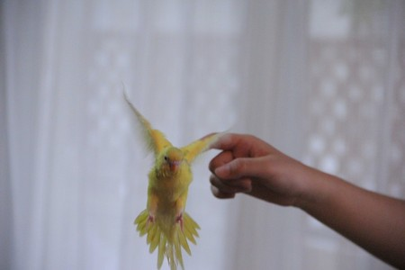
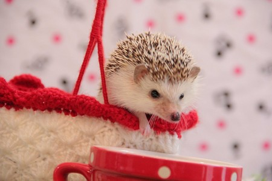
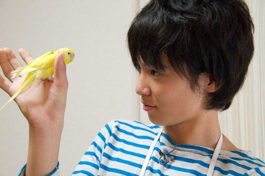
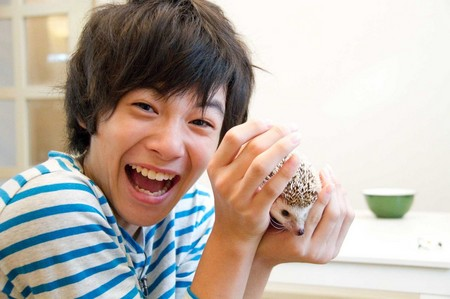
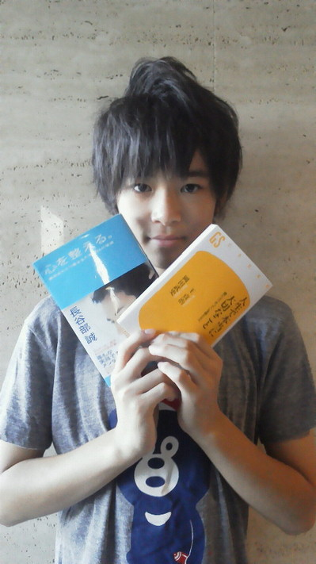
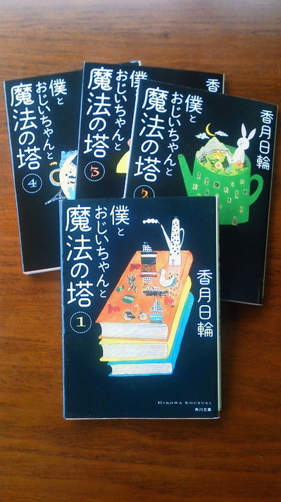

【ドウブツカメラ！】視聴者応募スペシャル（撮影：金子）
１０月１５日（月）「視聴者応募スペシャル」
今回の動物カメラマンは、金子隼也。ベストショットはこちら！
※画像をクリックすると大きな画像が開きます。
また、開いた画像を右クリックすると保存ができます。
撮影：金子隼也 『未来に羽ばたいて行け』

撮影：金子隼也 『初めまして』

ロケ中のオフショットはこちら！


投稿者:大天才テレビジョン社員１号 | 投稿時間:18時45分 | カテゴリ：ドウブツカメラ！ | 固定リンク


 " title="ソーシャルブックマークについて">
" title="ソーシャルブックマークについて">
※NHKサイトを離れます。
【面白かった本】金子隼也
僕が、オススメする本は、サッカー選手の長谷部誠さん著書の「心を整える」、
王貞治さん、岡田武史さん著書の「人生で本当に大切な事」です！

この２冊は、人生について深く書かれています！
『苦しい試練は神様の贈り物』『努力している姿は必ず誰かがみてくれている』など苦しい時に立ち向かっていくためのメッセージがたくさんありました。
僕も頑張らなきゃって勇気をもらえる本です。
それと最近読んでいるのは「僕とおじいちゃんと魔法の塔」のシリーズです。

亡くなったおじいちゃんと兄弟のなかで出来の悪い男の子の物語。
ファンタジーあふれる本ではまってます！
学校のクラスにも担任の先生所有のたくさんの本が「〇〇文庫」と名付けられ貸してもらえます。
歴史の本やサスペンスなど借りて読んでいます！
投稿者:金子隼也 | 投稿時間:18時00分 | カテゴリ：We are 大天才テレビジョン | 固定リンク
" title="ソーシャルブックマークについて">
※NHKサイトを離れます。